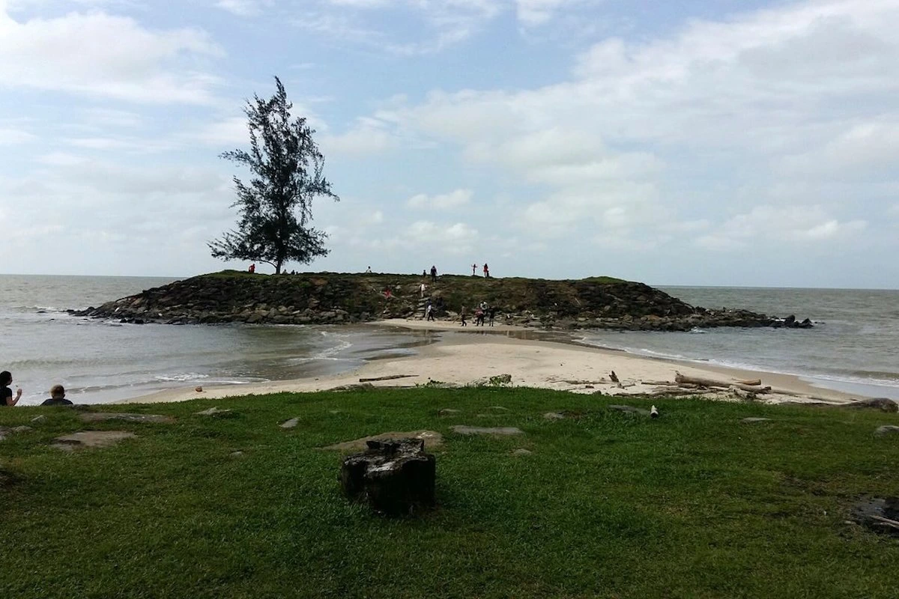
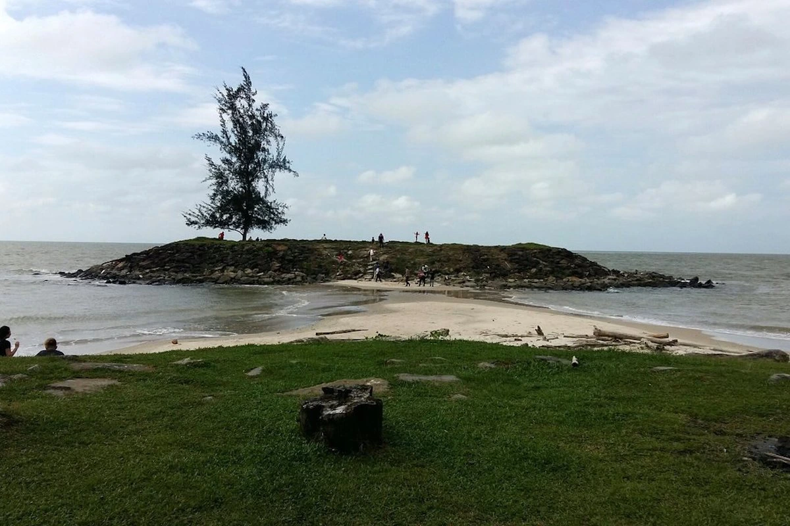

Place of Interest in East Malaysia
Sabah and Sarawak is the largest state in Malaysia and is almost equal to the size of Peninsular Malaysia.
It is no surprise that Sarawak is one of the top tourist spots in Malaysia.
With so much to offer with its rich culture and historical heritages, here are some of the best attractions in Sabah and Sarawak that you should check out.
 


Top 3 recommended attractions in Sabah and Sarawak
1.Gunung Mulu National Park, Kota Kinabalu
Gunung Mulu National Park is a beautiful national park situated in Sarawak that comprises caves and karst formations in the setting of the mountainous equatorial rainforest. This national park is highly renowned for its impressive collection of caves and rich dense rainforests. It is also home to a vast variety of flora and fauna, thereby offering a perfect escapade from the humdrum of city life close to the lap of nature.
2.Temasya Tanjung Batu Beach (Pantai Temasya Tanjung Batu)
Located near to the center of the town, many local will come here for an evening stroll by the beach. It is a pristine beach that has many facilities for the comfort of the visitors. Not only that, if you are looking for a beautiful sunset view, you will not be disappointed with seeing the sun disappearing below the horizon here.
3.Tunku Abdul Rahman National Park
Tunku Abdul Rahman National Park is a beautiful collection of five Malaysian islands that are situated off the Borneo coast around six kilometers from Kota Kinabalu, Malaysia. It is a wonderful place for people who look forward to indulge in underwater activities or relax on the white sandy beaches. The fundamental attraction of this national park is the vast variety of aquatic life found in the surrounding waters of the park.